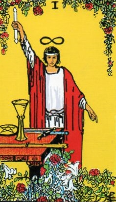
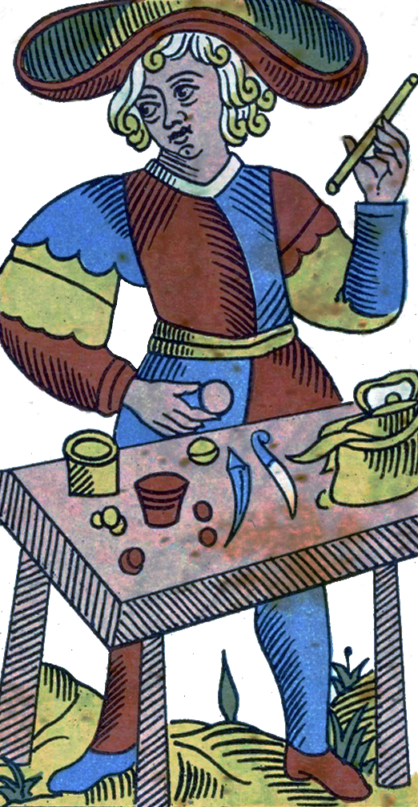
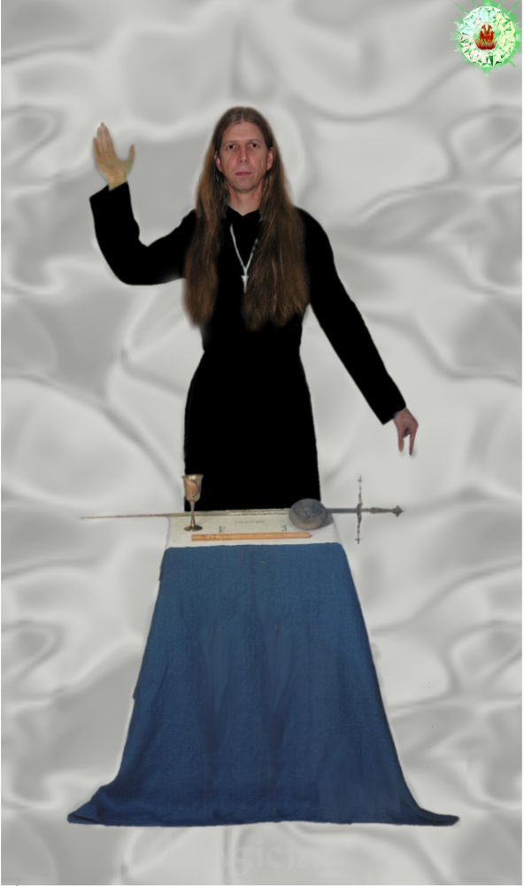
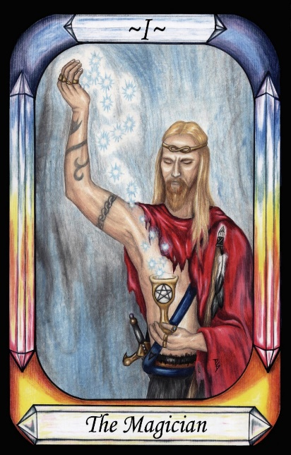
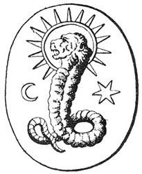
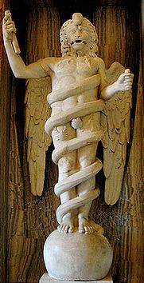
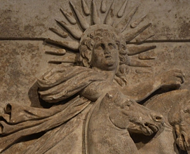
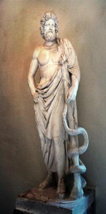

The Magician




Representation |
Demiurge |
Meaning |
Created by God, to create the material. Considered to be the Sun. The ultimate manifestation. |
Opposite card |
The Sun card, Myth of Phaethon, whose overconfidence brings destruction. |
Function |
The Magician is the Neo-Platonic Demiurge (rather than the Gnostic one) who is created by God, and then creates this material world – the world of Fire – at the behest of God. Mankind becomes trapped in this world, and cannot escape back to heaven until he learns to purify his soul.
[P13] God-the-mind, both male and female, brought forth another mind, the Demiurge (workman, craftsman), which was the Maker of Things [The Magician]. The Demiurge made the seven planetary Governors from the elements of nature. These seven encompass the entire world that is perceived by the senses, and their rule is called Fate.
RWS Imagery
A man robed in both red and white holds up in his right hand a wand having a flame or yod at each end, and points to the ground with his left hand. The wand may be raised to the sky, or to the living vine above. Above his head is the lemniscate. About his waist is a serpent as a belt. He stands behind a table holding a sword, wand, cup and pentacle. Above him is a vine bearing red flowers and about his feet are a mixture of red and white flowers.
Discussion
Neo-Platonic and Gnostic Perspectives
Early Renaissance scholars believed that the presence of the Demiurge in the Pymander Identifies the document as coming from the Gnostic school of thought. However, the Neoplatonic movement also used the Demiurge as creator. There is a strong difference of philosophy between the two.
The Gnostics considered the Demiurge to be a false God who traps mankind in a prison of his own making. They considered this false God to be the Jealous God of the Old Testament, with Jesus being sent by the Son of the true God to show us the way of escape. This theme continued into the Cathars who considered Death to be a divine thing, releasing them from the trap. Other titles and names for the Demiurge include Samael and Yaldabaoth.
The Neoplatonists took a less extreme viewpoint. They proposed that we are in fact trapped here in the physical world, but as a result of our own action. We came here out of curiosity, and are trapped until we purify ourselves. This is far more consistent with the Pymander, and it seems that its origins are more likely to be Neoplatonist than gnostic.
The Demiurge’s Role and Significance.
The Magician is the Demiurge, who is the creator and Master of the sensible world. He is “he who sits on the throne of Fire”, not God but carrying out the will of God. He is the Master of creation and manifestation, with hermetic Magicians attempting to emulate his abilities. Humanity shares the Demiurge's creative nature, making him a partial model for human potential.
The Magician's posture in the Waite-Smith deck illustrates creation descending from God (above) to the sensible world (below), reflected in Hermes' phrase "as above, so below." This correspondence between heaven and Earth is key to the process of manifestation.
The wand has flame at each end, to indicate creativity both above and below.
The table (altar) holds the four tarot indicators of the four elements,
The red and white flowers represent the male and female aspects of the Hermetic principle of gender,
Historical Context and Influences
The Pymander was re-discovered during the Renaissance as a document in Arabic, which is believed to have been translated from a Greek original., which was subsequently dated via linguistic analysis to somewhere in the second to fourth century AD. This was the time of the Gnostic Christians and the first wave of Neoplatonists, and the Pymander seems to include concepts
Correspondences and Implications.
It is interesting to note that there is a Devil card in the Tarot and mentioned in the Pymander. These two can be considered to be two sides of the same coin – both the creator of the physical world, and our tormentor through the nature of that world, unless we can rise above.
Here is a symbol that was used to represent the Demiurge:

Figure 3- Symbol for the Demiurge
Note that the Lion’s head also links the Demiurge to Leo and the Sun. Alchemists believed that Light had a property of attraction that caused our world to coalesce. Thus the Sun was the source of the light that formed the material world, and so the Demiurge is the Sun.
Hellenic thought separated the Demiurge into three levels of abstraction, identifying



Figure 4 - Aeon, Helios and Asclepios
Crowley’s use of the Aeon as replacement for Judgement Day reflects Plato’s immortality of the soul, which rises after Death in the traditional card.
Speculative Connections
Some esoteric interpretations suggest a symbolic link between Jesus and the Demiurge:
Creator of a world we weren't meant to inhabit
Saviour guiding us to escape
The Pymander mentions the Word of God, potentially relating to Jesus as the Word made Flesh (John 1:14), descending and re-ascending. While not explicit, hints within the Pymander suggest this connection. Imagine building a chicken coop. A hawk, seeking prey, becomes trapped. You, the builder, inadvertently created the hawk's prison. Yet, you also hold the key to its freedom.